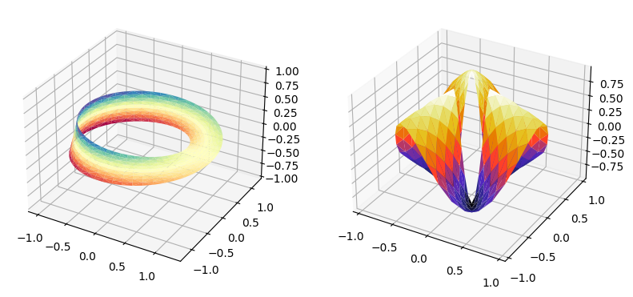

Complex code package#
In order to reuse complex code across the book, we are developing a Python
package bpython in the folder /lib/book-python/. It is installed
automatically after the requirements with
pip install -e /lib/book-python/
Then, the functions can be used in the MyST markdown files.
import bpython
print(f"The current BPython version is {bpython.__version__}")
The current BPython version is 0.0.1.dev1
Code listing#
It is possible to print the source code of any Python function with the package
inspect. The following is an example for a function in the bpython
package.
import inspect
from bpython.examples import python_function_example
lines = inspect.getsource(python_function_example)
print(lines)
def python_function_example():
'''This function prints 'Hello world!'
'''
print('Hello world!')
Example from Matplotlib documentation#
The following function is an example that plots surfaces in triangular mesh. The original code can be found in the Matplotlib documentation More triangular 3D surfaces
from bpython.examples import matplotlib_trisurf3d_2
matplotlib_trisurf3d_2()

Example from Pandas documentation#
The following is an example of a table generated with Pandas from its documentation Formatting the Display
from bpython.examples import pandas_table_weather
pandas_table_weather()
| Tokyo | Beijing | |
|---|---|---|
| Monday | Rain | Dry |
| Tuesday | Dry | Rain |
| Wednesday | Dry | Dry |
| Thursday | Heavy Rain | Heavy Rain |
| Friday | Heavy Rain | Rain |